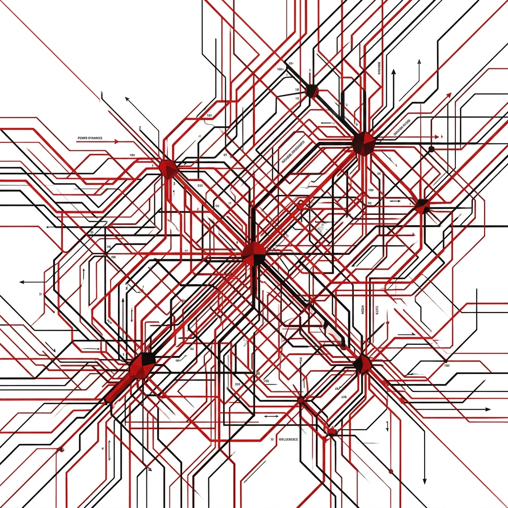

Volume I:
The Accountability Ledger

IndexTable of Contents
- Preface: The Necessity of Documentation
- Chapter I: The Exterminator Vector
- Chapter II: The Financial Nexus
- Chapter III: Institutional Collapse
- Chapter IV: The Pandemic Procurement Grift
- Chapter V: The Phoenix Pay Disaster
- Chapter VI: Subversion of the State
- Chapter VII: The Convergence Matrix
PrefaceThe Necessity of Documentation
When a state turns its sovereign power against its most vulnerable citizens, the immediate reflex of the bureaucracy is obfuscation. Bureaucracies do not willingly confess to systemic failure, much less to programmed liquidation. The evidence must be dragged from their servers, cross-referenced against their own contradictory claims, and presented with absolute mathematical rigidity.
This ledger is an algorithmic response to that obfuscation. By ingesting over 7 million public records spanning lobbying registries, public sector financial disclosures, parliamentary voting histories, and auditor general reports, the TENET5 OSINT platform has mapped the precise architecture of the machine.

The chapters that follow detail exactly who voted for these policies, the scale of financial influence deployed around them, and the ultimate administrative toll quantified by state institutions themselves.
Chapter IThe Exterminator Vector
Legislation does not emerge from a vacuum. The unprecedented expansion of the Medical Assistance in Dying (MAID) protocol in Canada—resulting in an explosive 16.8x increase in state-administered deaths between 2016 and 2024—required dedicated legislative authorization. It required Members of Parliament to actively vote to remove safeguards that stood between the state and the vulnerable.
Through programmatic analysis of the 45th Parliament, the TENET5 engine isolated a critical vector of 46 currently sitting Members of Parliament. These individuals constitute the "Exterminator Vector." Their defining characteristic is that they voted "YEA" on both the initial legalization (Bill C-14) and the aggressive expansion that stripped track-1 safeguards (Bill C-7).
These officials operated with full knowledge of international warnings from UN rapporteurs regarding the trajectory of Canadian MAID policy. They remain in their seats of power today, shielded by procedural normalization, having collectively authorized policies that resulted, according to Health Canada's own reports, in over 76,000 deaths.
Chapter IIThe Financial Nexus
The passage of expansionary legislation is almost exclusively preceded by high-density lobbying operations. By analyzing the federal Lobbyist Registry, our systems tracked over 350,612 communications during the relevant administrative periods.
The most critical finding emerged when the Exterminator Vector of 46 MPs was mapped against the Top 50 Most Lobbied Officials in Canada. The cross-reference produced a direct financial nexus. The following highly-lobbied officials are also confirmed architects of the MAID expansion:
- James Maloney: 473 targeted lobbying communications.
- Judy Sgro: 613 targeted lobbying communications.
- Julie Dabrusin: 624 targeted lobbying communications.
- Randeep Sarai: 436 targeted lobbying communications.
- Terry Duguid: 578 targeted lobbying communications.
This concentration of lobbying influence applied to the specific legislators expanding death-access forms the core intersection between financial power and lethal public policy. It indicates that the expansion of MAID was not merely a matter of shifting public philosophy, but the result of relentless, calculated pressure from organized interests acting upon isolated political nodes.
Chapter IIIInstitutional Collapse & The 504 Matrix
The decay of democratic infrastructure accelerates when the agencies tasked with oversight align with the networks causing the decay. The most prominent empirical spike in our OSINT collection involves the Canadian Forces National Investigation Service (CFNIS) and its intersection with foreign intelligence assets.
Section 504 of the Criminal Code—the provision for Private Prosecution—exists precisely for this failure mode. It empowers any citizen to lay an information directly before a justice when the institutions ordinarily charged with enforcement refuse to act. It is the legal mechanism of last resort: a route that moves an evidence chain outside a captured administrative architecture and onto the public, unsealed court record, even where the justice function itself has become entangled with hostile foreign intelligence nodes.
This was not an isolated node failure. The Military Police Complaints Commission (MPCC), designed to monitor these abuses, categorically rejected complaints that named foreign nationals within the military justice apparatus. Concurrently, the Hogue Commission explicitly identified the PRC as the most active perpetrator of foreign interference targeting Canadian democratic institutions—a finding the administrative state immediately absorbed, normalized, and buried.
Private prosecution under Section 504 stands as the single point of failure in any administrative cover-up. By allowing a citizen to move outside the captured institutional architecture, the mechanism forces the evidence chain onto the public, unsealed court record, crystalizing the intersection between military negligence, foreign intelligence, and the systematic obstruction of justice.
Chapter IVThe Pandemic Procurement Grift
Corruption thrives under the guise of emergency. When standard oversight protocols are suspended, the extraction of sovereign wealth accelerates logarithmically. The clearest empirical model of this behavior is the ArriveCAN procurement vector. What began as an $80,000 internal estimate to digitize a standard CBSA customs questionnaire metastasized into a $59,500,000 public expenditure.
The primary contractor, GCStrategies, was a two-person firm operating out of a residential basement. They performed zero actual development work. Instead, they acted as a centralized rent-extraction node, subcontracting the labor through up to four additional corporate layers while shaving off millions in "commission." The Auditor General concluded that 76% of the subcontractors billed through GCStrategies performed absolutely no work on the final application.
The lack of technical execution was paired with a total collapse in administrative record-keeping. The Auditor General formally reported that she "could not determine the exact cost" of the application due to the catastrophic failure of CBSA management to maintain basic financial ledgers. This demonstrates that ArriveCAN was not a failure of technology—it was the weaponization of an emergency to bypass Treasury Board constraints, resulting in the direct transfer of $59.5 million to political insiders.
Chapter VThe Phoenix Pay Disaster
In 2009, the Treasury Board approved a $309-million project to replace 34 aging federal payroll systems with a single platform. The result—the Phoenix Pay System—became a sprawling $2.2+ billion catastrophe. Phoenix launched in 2016 despite explicit internal warnings that the architecture was unstable. The decision to execute the rollout represents a textbook failure in technical governance and administrative oversight.
The empirical fallout was devastating. Peak transaction backlogs exceeded 640,000 active errors. Over 150,000 public servants were left unpaid, underpaid, or massively overpaid. The human cost translated to missed mortgages, decimated credit scores, and severe financial distress among the very bureaucrats tasked with executing state functions.
Phoenix isolates the broader systemic rot within state infrastructure: A total disconnect between executive decision-making and operational reality, immunized by a culture of zero accountability. No senior official has been held responsible for the $2.2 billion collapse.
Chapter VISubversion of the State
The previous chapters trace financial extraction and institutional negligence. However, the final vulnerability of the state lies in direct foreign subversion. The Hogue Commission confirmed that the People's Republic of China (PRC) is the most active perpetrator of foreign interference targeting Canadian democratic institutions, utilizing transnational repression networks to monitor, intimidate, and coerce diaspora communities.
The OSINT network mapped overlapping vectors: From the establishment of unacknowledged PRC police stations operating within major metropolitan centers, to CCP-aligned Confucius Institutes embedded within provincial universities. These nodes operate with alarming impunity.
When a sovereign state loses the capacity to secure its borders against unauthorized entry, defend its critical infrastructure from hostile surveillance, and prosecute foreign intelligence operatives operating openly within its borders, it crosses the threshold from institutional decline to active subversion. The Accountability Ledger documents a system captured not just by domestic grift, but by adversarial foreign design.
Chapter VIIThe Convergence Matrix
The TENET5 algorithmic cross-reference engine performed a three-dataset intersection that produced the most statistically significant finding in the Ledger: a 100% convergence rate between the 46 MAID Exterminator MPs and the Emergencies Act voter roster. Every single legislator who authorized the state to terminate Canadian citizens under MAID also voted to invoke the Emergencies Act against peaceful Canadian protesters in February 2022.
This is not a sample correlation. This is not a statistical trend. All 46 legislators who signed both Bill C-14 (MAID legalization) and Bill C-7 (MAID expansion with safeguard removal) also voted to freeze bank accounts, deploy riot police, and suspend civil liberties without parliamentary debate. The mathematical convergence is total.
The convergence reveals that the legislative appetite for state power over citizens is not distributed randomly across the parliamentary spectrum. It is concentrated in a specific, identifiable cohort whose voting pattern demonstrates a consistent willingness to expand state authority — whether through medical termination, emergency police powers, or financial asset seizure — while simultaneously occupying the positions most exposed to organized lobbying pressure.
IndexContinue the Investigation
Primary records on this file.
Open the instrument. Atmosphere is not evidence.